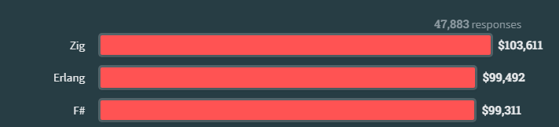
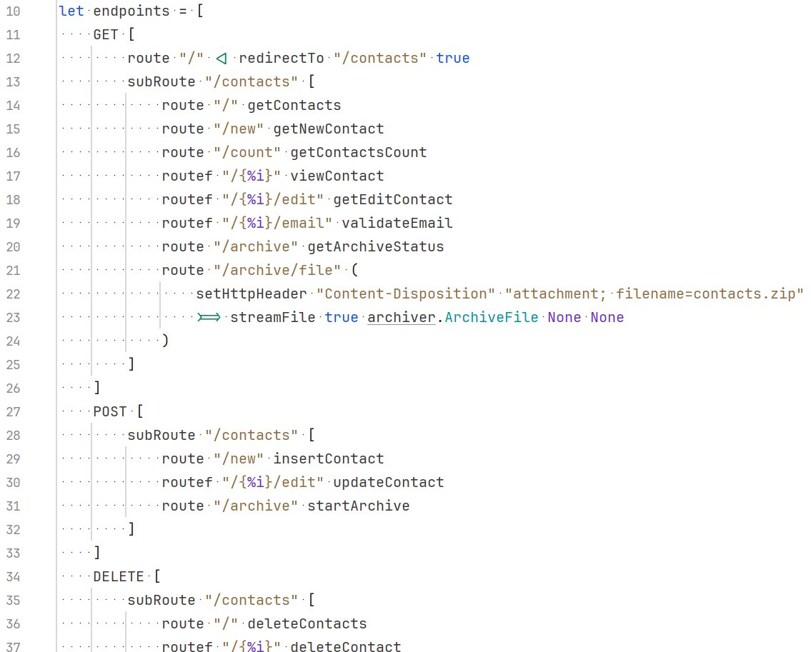
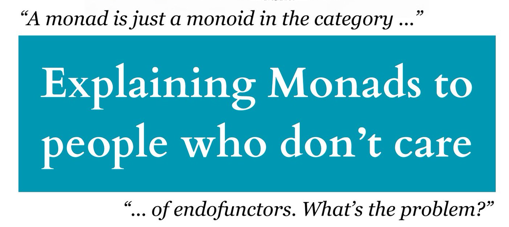

val x : 'a
val f : ('a -> 'b)
val square : x:int -> int
Full name: Cool_cousin.square
val x : int
val withoutPipes : n:int -> int
Full name: Cool_cousin.withoutPipes
val n : int
Multiple items
module List
from Microsoft.FSharp.Collections
--------------------
type List<'T> =
| ( [] )
| ( :: ) of Head: 'T * Tail: 'T list
interface IEnumerable
interface IEnumerable<'T>
member GetSlice : startIndex:int option * endIndex:int option -> 'T list
member Head : 'T
member IsEmpty : bool
member Item : index:int -> 'T with get
member Length : int
member Tail : 'T list
static member Cons : head:'T * tail:'T list -> 'T list
static member Empty : 'T list
Full name: Microsoft.FSharp.Collections.List<_>
val sum : list:'T list -> 'T (requires member ( + ) and member get_Zero)
Full name: Microsoft.FSharp.Collections.List.sum
val map : mapping:('T -> 'U) -> list:'T list -> 'U list
Full name: Microsoft.FSharp.Collections.List.map
val sumOfSquares : n:int -> int
Full name: Cool_cousin.sumOfSquares
type Expression =
| Number of int
| Add of Expression * Expression
| Multiply of Expression * Expression
| Variable of string
Full name: Cool_cousin.Expression
union case Expression.Number: int -> Expression
Multiple items
val int : value:'T -> int (requires member op_Explicit)
Full name: Microsoft.FSharp.Core.Operators.int
--------------------
type int = int32
Full name: Microsoft.FSharp.Core.int
--------------------
type int<'Measure> = int
Full name: Microsoft.FSharp.Core.int<_>
union case Expression.Add: Expression * Expression -> Expression
union case Expression.Multiply: Expression * Expression -> Expression
union case Expression.Variable: string -> Expression
Multiple items
val string : value:'T -> string
Full name: Microsoft.FSharp.Core.Operators.string
--------------------
type string = System.String
Full name: Microsoft.FSharp.Core.string
val Evaluate : env:Map<string,int> -> exp:Expression -> int
Full name: Cool_cousin.Evaluate
val env : Map<string,int>
val exp : Expression
val x : Expression
val y : Expression
val id : string
Multiple items
module Map
from Microsoft.FSharp.Collections
--------------------
type Map<'Key,'Value (requires comparison)> =
interface IEnumerable
interface IComparable
interface IEnumerable<KeyValuePair<'Key,'Value>>
interface ICollection<KeyValuePair<'Key,'Value>>
interface IDictionary<'Key,'Value>
new : elements:seq<'Key * 'Value> -> Map<'Key,'Value>
member Add : key:'Key * value:'Value -> Map<'Key,'Value>
member ContainsKey : key:'Key -> bool
override Equals : obj -> bool
member Remove : key:'Key -> Map<'Key,'Value>
...
Full name: Microsoft.FSharp.Collections.Map<_,_>
--------------------
new : elements:seq<'Key * 'Value> -> Map<'Key,'Value>
val find : key:'Key -> table:Map<'Key,'T> -> 'T (requires comparison)
Full name: Microsoft.FSharp.Collections.Map.find
val expressionTree1 : Expression
Full name: Cool_cousin.expressionTree1
val environment : Map<string,int>
Full name: Cool_cousin.environment
val result : int
Full name: Cool_cousin.result
F#
C#'s Cool Cousin
Why Settle for Okay When You Can Be Functional?
Tomas Grosup @ F# Team @ DevDiv
F# Team @ DevDiv Prague
- Compiler
- Tooling (VS directly, others indirectly via Nuget)
- Language design and suggestions
- OSS interactions
- FSharp.Core standard library
Why F# ?
- Succint language for .NET and JS (Fable project) runtimes
- Write it anywhere - VS, VsCode, that other IDE competitor
-
Run it anywhere - cloud, desktop, mobile, scripts
- Why not at your job?
- Even this slide deck is in F#!
... and so much profit

What is F#?
- Pragmatic, functional-first language
- Smooth .NET interop in both directions
-
Good defaults, type inference!
- 'static vs dynamic' is so over
Do you like these in C#?
You will love F#!
- async/await
- Expression-bodied members
- Pattern matching
- Records
- Collection literals
Quiz: What makes the features strong in .NET?
(compare to e.g. JVM)
- Span,ReadOnlySpan
- Task
- Collections
Pieces of F#
Let's start with |> pipe
1:
2:
3:
4:
5:
6:
7:
8:
|
let (|>) x f = f x // This is defined in FSharp.Core already :-)
let square x = x * x
let withoutPipes n = List.sum(List.map (square) [1..n] )
let sumOfSquares n =
[1..n]
|> List.map square
|> List.sum
|
sumOfSquares 5:
Union Types
1:
2:
3:
4:
5:
|
type Expression =
| Number of int
| Add of Expression * Expression
| Multiply of Expression * Expression
| Variable of string
|
Matching and evaluation
1:
2:
3:
4:
5:
6:
|
let rec Evaluate env exp =
match exp with
| Number n -> n
| Add(x, y) -> Evaluate env x + Evaluate env y
| Multiply(x, y) -> Evaluate env x * Evaluate env y
| Variable id -> env |> Map.find id
|
Scripting
1:
2:
3:
4:
|
// the expression: a + 2 * b.
let expressionTree1 = Add(Variable "a", Multiply(Number 2, Variable "b"))
let environment = Map [ "a", 1; "b", 2 ]
let result = Evaluate environment expressionTree1
|
result is evaluated for us here:
Excellent for DSLs
- Type inference and collection expressions
- Active patterns
- Computation expressions
Succint and composable

And you can write F# without this, yes!
This is the end.
